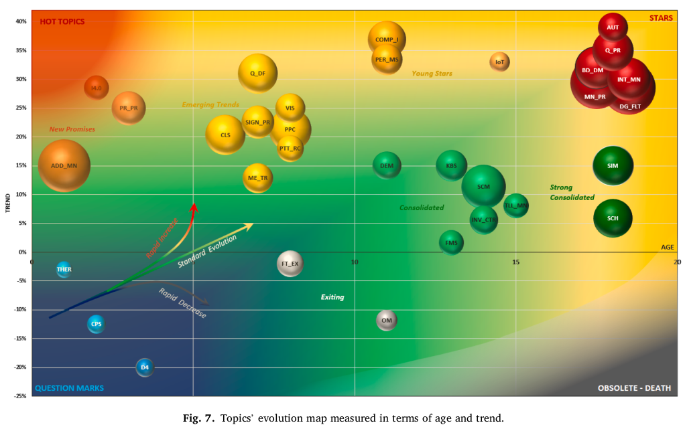
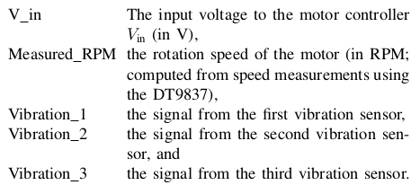

Review papers
Bertolini2021
Machine Learning for industrial applications: A comprehensive literature review
\(5/5 \star\)
Article (Bertolini2021)
Bertolini, M.; Mezzogori, D.; Neroni, M. & Zammori, F.
Machine Learning for industrial applications: A comprehensive literature review Expert Systems with Applications, 2021, 175, 114820
Good review paper, classifies papers by Application Domain and by ML algorithm.
Not only for CNC / machining, but many types of industrial applications
Large number of papers surveyed
Hot and not-so-hot topics, clustered:
Using these metrics, five main clusters can be identified. These are:
- Question Marks (Low Age and Negative Trend) – Recently introduced topics, that have not got a follow-up, yet. Thermography (THER), Cyber-Physical Systems (CPS), and Design For (D4) belong to this category.
- Hot Topics (Low Age and
NegativePositive Trend) – Very recent topics of booming interest. At present, none of the keywords properly belong to this category. Yet, Additive Manufacturing (ADD_MN), Prediction & Prognostic (PR_PR), and Industry 4.0 (I4.0) are those who come closest to this category. For this reason, they have been labeled as ‘new promises’. - Consolidated (Medium Age and Stable Trend) – Not recent topics, which are still studied, but without the initial spike of interests. Topics such as Supply Chain Management (SCMI), Flexible Manufacturing Systems (FMS), Inventory Control (INV_CTRI), and Tool Monitoring (TLL_MN) belong to this category.
- Stars (High Age and Positive Trend) – Old and consolidated topics that are still attracting increasing research interest. Topics such as Diagnosis and Fault Detection (DG_FLT), Manufacturing Process (MN_PR), Intelligent Manufacturing (INT_MN), and Big Data analysis (BD_DM) certainly belong to this class. Probably, Simulation (SIM) and the Internet of Things (IoT) are on their way to become stars.
- Obsoletes (High Age and Negative Trend) – Old topics that have never received much scientific interest and that have almost disappeared from the technical literature. Due to the recent introduction of ML, for operation management, no keywords can be classified as obso letes yet. However, Order Management (OM) and, probably, also Feature Extraction (FT_EX) are moving toward this class.


…
Anomaly detection examples:


Sample variables commonly used in datasets:
Table 4, which provides some indications concerning the variables that are commonly used per each application domain and sub-area

Interesting aspects
- Maintenance management: keep assets and machines at a full operating state
- Failure Mode Analysis: Faults detection and classification. Easily interpreted as a prediction task, where historical data are collected on the production floor, and faulty and non-faulty events are used as ground-truth data against which a prediction model can be trained (NN, SVM)
- Condition Monitoring: the most common applications concern condition monitoring of rotating mechanical systems and rolling bearings. The problem is solved using vibrations and/or acoustic signals as classifiers inputs.
- Downtime Minimization: Plan predictive maintainance operations smartly, to minimize costs.
- Quality Management
- Defects’ Detection and Classification
- Unbalanced datasets
- Visual quality inspection: detect defects by image classification
- Defects’ Detection and Classification
- Production Planning & Control (PPC)
- Performance Prediction and Optimization: order acceptance policy, optimal sequence of technical steps, reduce electricity consumption, optimize parameters
- Scheduling: NP-hard, select dispatching rules, dynamic scheduling based on conditions
- Process Control: Reinforcement Learning to automate a process; optimizing parameters for safe behavior in non-conforming operations.
- Supply Chain Management: logistics
- Modeling and Coordination: Reinforcement Learning
- Demand Forecasts: prediction models
- Inventory Control:
- complex modeling of supply chains, not easy, RL is a good fit here
Other things: - noisy data is common, many techniques used to clean it - unbalanced data - low interpretability, with Deep NNs
Kim2018
Smart Machining Process Using Machine Learning: A Review and Perspective on Machining Industry (2018) (Kim et al. 2018)
\(3/5 \star\)
Contains a listing of many machining problems where machine learning algorithms have been used in machining.
- Machine processes: General, milling, drilling
- Purpose: Tool wear and breakage, predict energy consumption, surface roughness prediction, process parameter optimization
- Algorithms: SVM and SVR, various NNs, Random forests, linear regression, k-NN, depending on task
Tambake2021
Data Driven Cutting Tool Fault Diagnosis System Using Machine Learning Approach: A Review (Tambake, Deshmukh, and Patange 2021)
\(2/5 \star\)
- Poorly written, but contains a list of papers on fault detection


Technical papers
Ordas2017
Wear Characterization of the Cutting Tool in Milling Processes using Shape and Texture Descriptors (PhD thesis, 2017)(García-Ordás 2017)
PhD thesis which proposes and evaluates some image-based descriptors to characterize tool wear, using a cheap Raspberry Pi + camera setup which captures images of the cutting tool.
Investigative / no remarkable results.
Papandrea2020
Surface roughness diagnosis in hard turning using acoustic signals and support vector machine: A PCA-based approach (Papandrea et al. 2020)
- Supervised Learning
- Surface roughness classification, based on acoustic signals during cutting.
- Use STFT followed by PCA per coefficients, and SVM for classification.
- Tested on CNC, with stock microphone
- Some complicated experimental machining setups, several parameters in the process (rotating speed, feed rate). The experimental setups depend on many factors.
- Results weak. Some PCA coeffs are correlated with roughness, and can be clustered consistently into 3 groups, which can then be identified in test sets.
- More investigative / basic research, no remarkable results.

Cho2005
Tool breakage detection using support vector machine learning in a milling process (Cho et al. 2005)
Article (Cho2005)
Cho, S.; Asfour, S.; Onar, A. & Kaundinya, N.
Tool breakage detection using support vector machine learning in a milling process
International Journal of Machine Tools and Manufacture, 2005, 45, 241-249
- Supervised Learning
- Detect two types of tool breakage: shank breakage and flute breakage
- Cutting forces + power consumption (proportional with force) + SVRegression => detect flute breakage
- Idea:
- In normal operation, model the cutting force / normal power consumption based on spindle speed, feed rate, depth of cut with SVRegression (alternative: with multiple linear regression)
- Detection: if actual measured values deviate a lot from model predictions (by a threshold), we have a breakage.
- SVR is hard to parameterize!
Li2017
An Ensemble Deep Convolutional Neural Network Model with Improved D-S Evidence Fusion for Bearing Fault Diagnosis (Li et al. 2017)
Article (Li2017)
Li, S.; Liu, G.; Tang, X.; Lu, J. & Hu, J.
An Ensemble Deep Convolutional Neural Network Model with Improved D-S Evidence Fusion for Bearing Fault Diagnosis
Sensors, Multidisciplinary Digital Publishing Institute, 2017, 17, 1729

- Supervised Learning
- For bearing fault detection, with deep neural networks
- Using Dempster–Shafer (D-S) evidence theory for sensor fusion, improves it with custom modifications
- Raw signals: acceleration and vibration from 2 sensors
- Data preprocessing: sliding windows, subband, RMS, reshape to square images
- Small CNN trained in images, used as feature extractors
- CNN outputs are fused with the Improved D-S scheme
Kankar2011
Fault diagnosis of ball bearings using machine learning methods (Kankar, Sharma, and Harsha 2011)
Article (Kankar2011)
Kankar, P. K.; Sharma, S. C. & Harsha, S. P.
Fault diagnosis of ball bearings using machine learning methods
Expert Systems with Applications, 2011, 38, 1876-1886
Supervised Learning
Detect defects and in ball bearings based on vibration data collected with accelerometers
2D acceleration signals (horizontal and vertical)
Recording length = about 0.5 to 1 second
5 classes:
- Healthy bearings (HB).
- Bearing with outer race crack (BORC).
- Bearing with rough inner race surface (BRIR).
- Ball with corrosion pitting (BCP).
- Combined bearing component defects (CBD)
Manual features (range, mean, kurtosis etc):
6 features from horizontal + 6 features vertical + speed + “number of loader” =< 14 features per instance
Feature selection step (not clear how)
Results: accuracy about 70%
Ong2019
Tool condition monitoring in CNC end milling using wavelet neural network based on machine vision (Ong, Lee, and Lau 2019)
Article (Ong2019)
Ong, P.; Lee, W. K. & Lau, R. J. H.
Tool condition monitoring in CNC end milling using wavelet neural network based on machine vision
The International Journal of Advanced Manufacturing Technology, 2019, 104, 1369-1379
Nice introduction and review:
For the indirect method of tool condition monitoring, there are considerably numerous studies attempting to correlate the relationship between the machining parameters with tool wear
- tool wear detection with visual and non-visual signals (cutting force, sound, vibration)
- tool wear estimation by visually analyzing the surface of the machined part
Ue a special type of NN, Wavelet Neural Network, to predict flank wear. WNN is just their quirk.
WNN are a generalized form of RBF-NN, with wavelet activation functions
Use images of the tool itself and/or the surface of the machined part
Image preprocessing of the worn region of the tool:
img/2023-01-09-12-54-18.png
NN architecture used. Shallow with 1 hidden layer:
Dataset: just 126 images
Results: good predictions by pretty much all methods compared.
Hahn2021
Article (Hahn2021)
Hahn, T. V. & Mechefske, C. K.
Self-supervised learning for tool wear monitoring with a disentangled-variational-autoencoder
International Journal of Hydromechatronics, Inderscience Publishers, 2021, 4, 69-98
from
PapersWithCodeA disentangled-variational-autoencoder, with a temporal convolutional neural network, is used to model and trend tool wear in a self-supervised manner, and anomaly detection is used to make predictions from both the input and latent spaces
End-to-end Deep Learning
Temporal CNN:
causal and dilated convolutions

Disentangled-VAE:
just a normal VAE with a value of \(\beta\) higher than one in the cost function (?):
Tuning the hyper-parameter β, to a value larger than one, can enable the factors to disentangle such that each coding only represents one factor at a time. Thus, greater interpretability of the model can be obtained. As such, the disentangled-VAE is also called a β-VAE
Latent space anomaly detection: detect anomaly in the latent variables, i.e. out-of-distribution. Several methods available. KL-divergence.
Datasets:
- UC Berkeley Milling dataset. Freely available, small.
- Actual data from industry partener: 27 days, 5600 parts, annotated. Unavailable, large.
Process:
Preprocessing:
- select middle part of recording (stable cutting)
- sliding window
- MinMax scaling to \([0,1]\)
- each window labeled by hand (healthy / degraded / failed)
- randomly group windows into train/test sets
Standard training
Results:
PR-AUC 50% for failed vs non-failed on the UC Berkeley dataset (PR-AUC = Precision-Recall AUC)
4% PR-AUC on the industrial dataset ????!!!!
Mey2020
InProceedings (Mey2020)
Mey, O.; Neudeck, W.; Schneider, A. & Enge-Rosenblatt, O.
Machine Learning-Based Unbalance Detection of a Rotating Shaft Using Vibration Data
2020 25th IEEE International Conference on Emerging Technologies and Factory Automation (ETFA), 2020, 1, 1610-1617
- From PapersWithCode
- Code available in Github here
- Uses (introduces) Fraunhoffer unbalance dataset
Goal: try do detect if unbalance is present on the rotating shaft
Introduces a new dataset (Fraunhoffer unbalance dataset)
Methods:
CNN on raw sensor data (windowed), 2-4 convs
- 90% accuracy, weaker for small unbalance and particualar speeds (resonances?)
Fully-connected MLP in FFT data
- similar to CNN results
Random Forests on automatically extracted timeseries features (again with tsfresh)
- similar (?)
Hidden Markov Models on MFCC
Conclusions:
- The largest unbalance could be detected by all algorithms with almost perfect prediction accuracy, even if only 3 characteristic values per sample were used for the classification.
- With the smaller unbalances, on the other hand, wider variations between the different approaches were found.
- The best way to classify the dataset was to use an FC network with two hidden layers, which received the scaled FFT-transformed vibration data as input.
- Measured on the entire evaluation dataset, 98.6 % of the cases could be classified correctly.
Datasets
CRWU Bearing Dataset
Vibration data was collected using accelerometers, which were attached to the housing with magnetic bases. Accelerometers were placed at the 12 o’clock position at both the drive end and fan end of the motor housing. During some experiments, an accelerometer was attached to the motor supporting base plate as well. Vibration signals were collected using a 16 channel DAT recorder, and were post processed in a Matlab environment. All data files are in Matlab (*.mat) format. Digital data was collected at 12,000 samples per second, and data was also collected at 48,000 samples per second for drive end bearing faults. Speed and horsepower data were collected using the torque transducer/encoder and were recorded by hand.
UC Berkeley Milling dataset, NASA
Experiments on a milling machine for different speeds, feeds, and depth of cut. Records the wear of the milling insert, VB. The data set was provided by the UC Berkeley Emergent Space Tensegrities (BEST) Lab.

Bosch CNC dataset
PapersWithCode: Link here
Described in:
Article (Tnani2022)
Tnani, M.-A.; Feil, M. & Diepold, K.
Smart Data Collection System for Brownfield CNC Milling Machines: A New Benchmark Dataset for Data-Driven Machine Monitoring
Procedia CIRP, 2022, 107, 131-136brownfield deployment: new hardware or software that must coexist with legacy IT systems
A whole procedure for collecting data and analyzing on the fly
Sensor mounting Dataset:
- vibration data collected with accelerometer sensors mounted to the rear end of the spindle housing
- collected over 2 years
- three diferent machines
- sampling rate 2 kHz, argue that it is enough for anomalies
- smart mining system, otherwise would need 4GB data per day
- 15 different operations recorded, with different parameterizations
- labeled good vs bad (normal vs anomaly)
Processing:
- Tsfresh: automatic package to extract standard features from time series, open source, here, paper here
Real world challenges:
- problems when changing tools => some recordings are bad
- unbalanced data (815 to 35)
- normal wear of tools, hydraulic issues, incorrect settings => some variability
- 15 different operations recorded, with different parameterizations => difficult to predict health status, it depends on all params
anomaly can be detected in frequencies which are integer multiples of the spindle speed ()
- anomalies better detected in frequency domain
IMS Bearing Dataset, Cincinatti, NASA
Link here, no.4
PapersWithCode: Link here
Kaggle: Link here
Accelerometer data in turning bearings, recorded until they fail
Four bearings were installed on a shaft. The rotation speed was kept constant at 2000 RPM by an AC motor coupled to the shaft via rub belts. A radial load of 6000 lbs is applied onto the shaft > and bearing by a spring mechanism. All bearings are force lubricated. Rexnord ZA-2115 double row bearings were installed on the shaft as shown in Figure 1. PCB 353B33 High Sensitivity Quartz ICP accelerometers were installed on the bearing housing (two accelerometers for each bearing [x- and y-axes] for data set 1, one accelerometer for each bearing for data sets 2 and 3). Sensor placement is also shown in Figure 1. All failures occurred after exceeding designed life time of the bearing which is more than 100 million revolutions.
Fraunhoffer unbalance dataset
PapersWithCode: Link here
Kaggle: Link here
Used by (Mey et al. 2020)
Not CNC
A vibrating drive train (DC motor, shaft roller bearing)
Unbalances of different weights and radii are attached to the shaft
This dataset contains vibration data recorded on a rotating drive train. This drive train consists of an electronically commutated DC motor and a shaft driven by it, which passes through a roller bearing. With the help of a 3D-printed holder, unbalances with different weights and different radii were attached to the shaft. Besides the strength of the unbalances, the rotation speed of the motor was also varied. This dataset can be used to develop and test algorithms for the automatic detection of unbalances on drive trains. Datasets for 4 differently sized unbalances and for the unbalance-free case were recorded. The vibration data was recorded at a sampling rate of 4096 values per second. Datasets for development (ID “D[0-4]”) as well as for evaluation (ID “E[0-4]”) are available for each unbalance strength. The rotation speed was varied between approx. 630 and 2330 RPM in the development datasets and between approx. 1060 and 1900 RPM in the evaluation datasets. For each measurement of the development dataset there are approx. 107min of continuous measurement data available, for each measurement of the evaluation dataset 28min. Details of the recorded measurements and the used unbalance strengths are documented in the README.md file
Each csv file contains:
